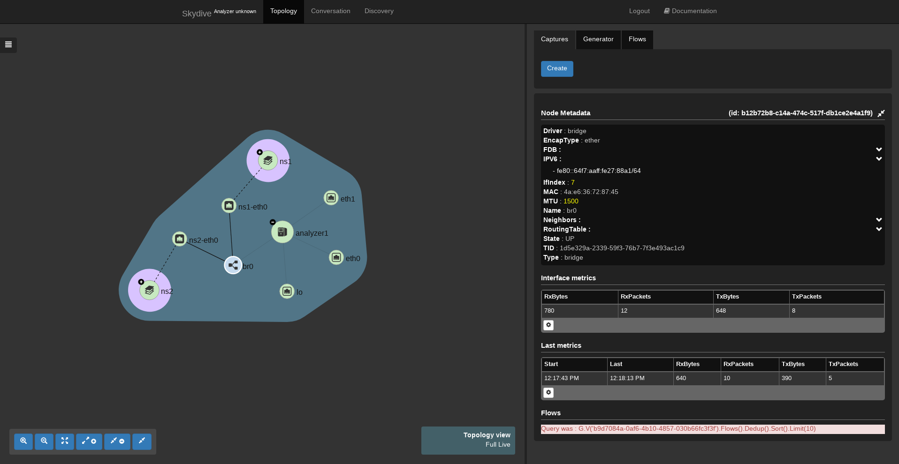
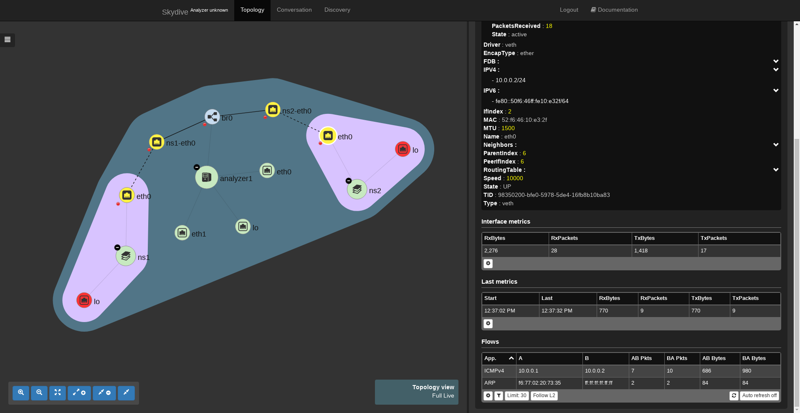

Traffic capture, multiple interfaces
In this third part will see how to create a capture matching multiple interfaces and how to follow a flow along a path.
Two network namespaces lab
To keep the demonstration simple we are just going to use a tiny shell script that will create two network namespaces interconnected through a bridges thanks to veth interfaces.
sudo ip netns add ns1
sudo ip link add ns1-eth0 type veth peer name eth0 netns ns1
sudo ip link set ns1-eth0 up
sudo ip netns exec ns1 ip link set eth0 up
sudo ip netns exec ns1 ip address add 10.0.0.1/24 dev eth0
sudo ip netns add ns2
sudo ip link add ns2-eth0 type veth peer name eth0 netns ns2
sudo ip link set ns2-eth0 up
sudo ip netns exec ns2 ip link set eth0 up
sudo ip netns exec ns2 ip address add 10.0.0.2/24 dev eth0
sudo ip link add name br0 type bridge
sudo ip link set dev br0 up
sudo ip link set dev ns1-eth0 master br0
sudo ip link set dev ns2-eth0 master br0
Once executed, Skydive should have detected the two namespaces and all the links and should look like this.

Shortest path capture
After having expanded the two namespaces, double clicking on them or thanks to the left botton expand button, we can start a capture using the same process as for capturing one interface except here we are going to select the eth0 of the first namespace as first interface and the eth0 of the second namespace as second interface.
Journey of a packet
Let's generate a bit of traffic. Skydive embeds a packet generator but here were just using a simple ping as the packet generator will be addressed in another part.
sudo ip netns exec ns1 ping 10.0.0.2
We can now check if we see ICMPv4 packets just clicking on one captured interface. Interfaces where the packets have been seen will be highlighted when pointing the mouse on the ICMP specific flow.
